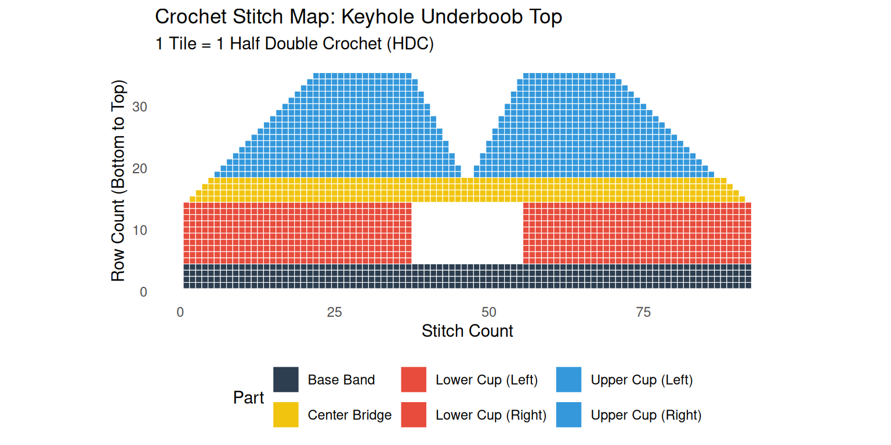

library(ggplot2)library(dplyr)# Gauge: 2 HDC stitches = 1 cm# Front panel width: 92 stitches# Nipple distance: Peaks at X=20 and X=72grid <-expand.grid(Stitch =1:92, Row =1:35)grid <- grid %>%mutate(Part =case_when(# 1. The Base Band (Solid support under the cutout) Row <=4~"Base Band",# 2. The Cutout Region (Rows 5 to 14)# Creating the left and right sides, leaving a central 18-stitch gap for the window Row >=5& Row <=14& Stitch <=37~"Lower Cup (Left)", Row >=5& Row <=14& Stitch >=56~"Lower Cup (Right)",# 3. The Sternum Bridge (Rows 15 to 18)# The fabric reconnects above the hole. The outer edges begin to taper in slightly. Row >=15& Row <=18& Stitch >= (1+ (Row-14)) & Stitch <= (92- (Row-14)) ~"Center Bridge",# 4. The Upper Cups (Rows 19 to 35)# Splits back into two triangles tapering up to the neck straps (X=20 and X=72) Row >=19& Stitch >= (5+ (Row-18)) & Stitch <= (46- (Row-18)*0.5) ~"Upper Cup (Left)", Row >=19& Stitch >= (47+ (Row-18)*0.5) & Stitch <= (87- (Row-18)) ~"Upper Cup (Right)",TRUE~"Empty Space" ) ) %>%filter(Part !="Empty Space")# Plotting the updated stitch mapggplot(grid, aes(x = Stitch, y = Row, fill = Part)) +geom_tile(color ="white", linewidth =0.2) +scale_fill_manual(values =c("Base Band"="#2C3E50", "Lower Cup (Left)"="#E74C3C", "Lower Cup (Right)"="#E74C3C","Center Bridge"="#F1C40F","Upper Cup (Left)"="#3498DB","Upper Cup (Right)"="#3498DB" )) +theme_minimal() +coord_fixed(ratio =1) +labs(title ="Crochet Stitch Map: Keyhole Underboob Top",subtitle ="1 Tile = 1 Half Double Crochet (HDC)",x ="Stitch Count", y ="Row Count (Bottom to Top)" ) +theme(panel.grid =element_blank(), legend.position ="bottom")

Written Pattern
Gauge: 2 HDC = 1 cm Stitches Used: HDC (Half Double Crochet), Sl St (Slip Stitch), Ch (Chain)
1. Base Band
Rows 1 - 4: Foundation HDC 92. (Or Ch 93, HDC in 2nd ch from hook and each ch across). For rows 2-4: Ch 1, turn, HDC across. (92 sts)
2. The Cutout Region (Sides of the Window)
You will work the left and right sides separately, leaving an 18-stitch gap in the middle.
Left Side: - Row 5: With right side facing, Ch 1. HDC in the first 37 sts. Leave the rest unworked. (37 sts) - Rows 6 - 14: Ch 1, turn. HDC in each st across. (37 sts). Fasten off after Row 14.
Right Side: - Row 5: Skip the next 18 sts of the Base Band (this forms the bottom of the keyhole window). Attach yarn to the 56th stitch. Ch 1, HDC in the same st and the remaining 36 sts. (37 sts) - Rows 6 - 14: Ch 1, turn. HDC in each st across. (37 sts). Do not fasten off; you will continue from here.
3. The Sternum Bridge (Closing the Window)
Row 15: (Continuing from the right side). Ch 1, turn. Skip the first st. HDC in the next 36 sts of the Right Side. Ch 18 over the keyhole gap. HDC across the 37 sts of the Left Side until 1 st remains. Leave the last st unworked. (90 sts counting the chains)
Rows 16 - 18: Ch 1, turn. Skip the first st. HDC across (working into the HDCs and the chains from the previous row) until 1 st remains. Leave the last st unworked. (Each row decreases by 2 stitches. By Row 18, you will have 84 sts).
4. The Upper Cups (Triangles)
You will split the work again to form the two upper triangles.
Left Upper Cup: - Row 19: With right side facing, Ch 1. Skip the first st. HDC in the next 40 sts. Leave the rest unworked. (40 sts) - Rows 20 - 35: Ch 1, turn. Decrease 1 st at the armpit edge (outer edge), and alternate decreasing 0 or 1 st at the cleavage edge (inner edge) to follow the taper of the grid (a ratio of roughly 1:0.5 decreases). Continue until only a few stitches remain for the strap. Fasten off.
Right Upper Cup: - Row 19: Attach yarn to the 48th stitch (leaving a small gap in the center). Ch 1, HDC in the next 40 sts, leaving the last st unworked. (40 sts) - Rows 20 - 35: Ch 1, turn. Decrease 1 st at the armpit edge, and alternate decreasing 0 or 1 st at the cleavage edge. Continue until only a few stitches remain. Fasten off.